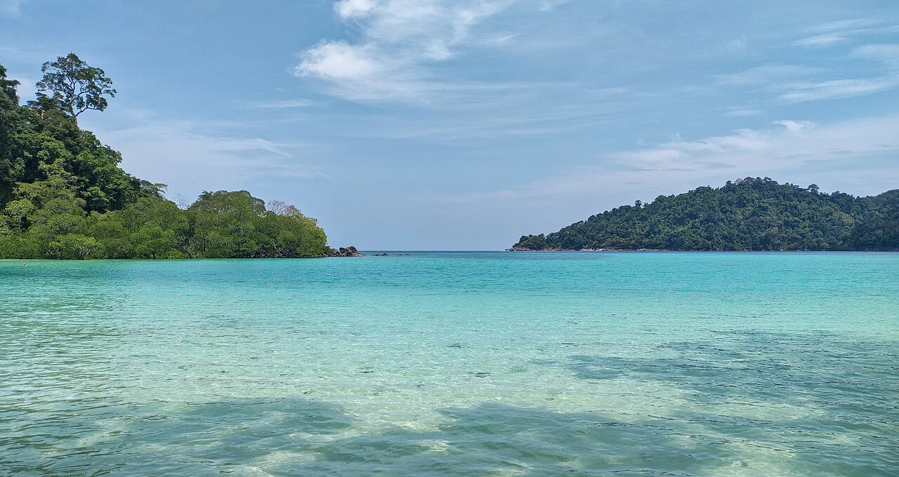

Mu Ko Surin — Ko Surin Nuea
Phang Nga, Thaïlande · snorkeling, plongée

Archipel de granit de la mer d’Andaman, à 55 km de la côte thaïlandaise, protégé par le parc national de Mu Ko Surin. Wikivoyage parle de plages de carte postale et d’un excellent snorkeling, l’activité principale des visiteurs, devant la plongée. Selon Wikipédia, le parc compte plus de 260 espèces de poissons de récif et 68 espèces de coraux. Le camping de Mai Ngam est sur Ko Surin Nuea.
- Lieu
- Phang Nga, Thaïlande
- Niveau
- Variable selon les conditions
- Activités
- snorkeling, plongée
- Type d'eau
- Mer / océan
- Coordonnées
- 9.43, 97.86 (position approximative du secteur)
Dangers à connaître
- Le parc n’ouvre qu’en saison sèche, en général du 15 octobre au 15 mai (Wikipédia), et peut fermer plus tôt selon la météo. Wikivoyage donne le 16 novembre : vérifie avant de partir.
- Les sites de plongée ne se rejoignent qu’en bateau, et la plongée est interdite dans certaines zones du parc (Wikipédia).
- Presque toutes les terres sont interdites aux visiteurs, sauf le village moken et le camping (Wikipédia).
Le conseil d'Ocean Buddy
Les îles se rejoignent en bateau rapide depuis Khao Lak ou Khura Buri, ou en croisière de plusieurs jours. Tu paies le droit d’entrée du parc au centre d’accueil de Khura Buri ou au quartier général, sur Ko Surin Nuea (Wikipédia).
Ouvrir dans Ocean Buddy Télécharger sur l'App Store
Source : Fiche Ocean Buddy · décembre 2026 · d’après Wikipédia et Wikivoyage · à vérifier localement.